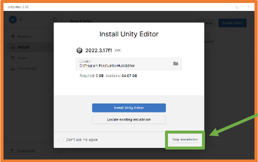
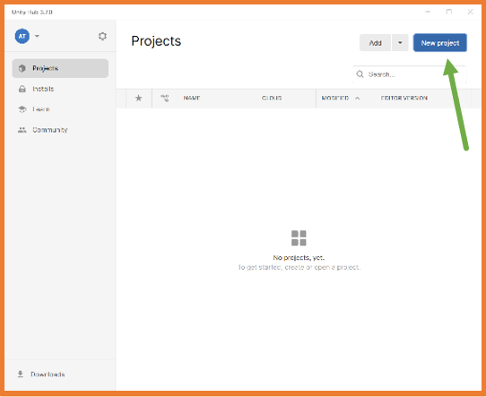
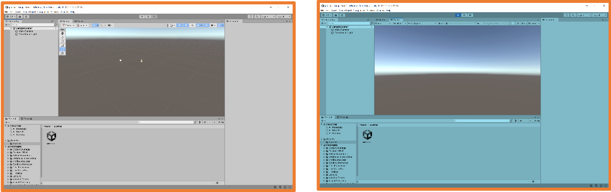
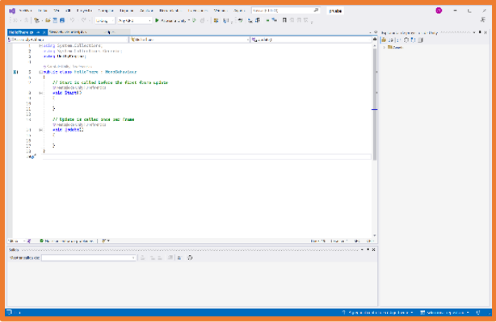

Al disponer de una Unity ID además de poder utilizar el motor de videojuegos (licencia de uso) también se puede usar la Unity Asset Store
desde la cual se podrá descargar assets tanto gratuitos como de pago.
Para desarrollar videojuegos se necesita el editor Unity.
La primera vez que se accede a Unity Hub con la Unity ID se indica que se puede instalar un editor Unity.
Por defecto, el editor Unity que se instalará será la última versión estable LTS (Long Term Support).
No se recomienda esta instalación por defecto ya que no permite configurar la instalación.

Desde el apartado Installs de Unity Hub
se pueden instalar las diferentes versiones del editor Unity disponibles:
Se debe elegir qué configuración se quiere para el editor Unity que permitirá crear los ejecutables del juego para cada plataforma, añadir idiomas asiáticos y la documentación de Unity.
Para clase será suficiente con marcar Linux Build Support (IL2CPP).
Editor de código
Unity necesita un editor de código para la programación de scripts, en Windows durante la instalación del editor Unity se incluye Microsoft Visual Studio Community.
En clase, aquellos que lo tengan, detectará Visual Studio Code y lo configurará como editor por defecto.
Si no se tiene instalado ese editor y no se quiere instalar, se debe desmarcar.
En el caso de usar Microsoft Visual Studio Community o Visual Studio Code
como editor por defecto se pueden instalar las extensiones para el lenguaje de programación C# que es el usado con Unity.
Si no se tiene instalado Microsoft Visual Studio Community y no se quiere instalar, se debe desmarcar.
Se puede utilizar cualquier otro editor de código cambiando la configuración del editor Unity una vez esté instalado.
En Menú -> Edit -> Preferences.
Si más adelante en el desarrollo se necesita, se pueden añadir/eliminar módulos al editor.
Crear Proyecto Unity
Unity HUB será el punto de inicio de cualquier proyecto Unity, en su ventana se pueden ver las secciones:
Projects: gestor de proyectos.
Installs: gestor de editores Unity instalados.
Learn: apartado de autoaprendizaje
Community: acceso a la comunidad con secciones como Assets Store o Foros.
Desde Unity Hub, en el apartado Projects se pueden crear proyectos pulsando el botón New project.

Al crear un proyecto se debe elegir el tipo de proyecto para que se carguen las librerías necesarias.
Una vez creado el proyecto, este estará disponible en Unity Hub.
Durante la creación se abrirá el editor Unity para ese proyecto.
Actividad 1: Instalación de un editor Unity.
Actividad 2: Crea el proyecto PruebaTuNombre.
Editor Unity
Por defecto la ventana del editor Unity tiene el siguiente aspecto:
Unity hace uso de la Programación Orientada a Objetos,
por esta razón todos los elementos del juego se incluyen en la jerarquía de objetos.
El juego ocupa la posición más alta de la jerarquía y
dentro de él se ubican las escenas que podrían considerarse las pantallas del juego.
La jerarquía muestra todos los elementos que tiene una escena.
Dentro de cada escena se deben añadir todos los elementos que se necesiten,
estos elementos son los GameObject, las escenas también siguen una estructura jerárquica pudiendo agruparse los GameObjects
unos dentro de otros.
Por defecto, un proyecto Unity contiene una Escena que a su vez contiene un GameObject
de tipo cámara llamado Main Camera y un GameObject de tipo
luz llamado Directional Light.
En la parte central del editor se puede observar una visualización de la escena que
cuando se pulse el botón de reproducir juego se convertirá en la visualización desde la cámara configurada en el juego.
Cuando se selecciona un objeto de la escena, en el Inspector se pueden observar todas sus características.
Desde el código se podrá acceder a los componentes de cada objeto.
Cada tipo de objeto tendrá unos componentes por defecto, y además, se les puede añadir componentes si se necesita.
Main Camera Directional Light
En el Gestor de archivos permite visualizar y realizar todas las acciones que se requieran sobre los archivos del proyecto.
Se recomienda que todas las carpetas y archivos que se quieran crear se creen desde el gestor de archivos del editor.
Cuando se ejecuta el juego (botón "Play" ▶ de la barra superior) la sección de visualización cambia a la vista de la cámara y
toda la interfaz se oscurece.
Al ejecutar el juego se puede trabajar con el proyecto para poder ver cómo reacciona según diferentes valores,
pero los cambios solo se mantienen durante la ejecución del juego.
Al no haber casi diferencia de estilo entre los dos estados a veces se nos olvida que se está ejecutando el juego y se pierden los cambios.
Desde el Menú -> Edit -> Preferences en la sección Colors
se puede decidir qué color va a superponer a la interfaz cuando se ejecute el juego: Playmode tint.
Interesa poner un modo que aporte mucho contraste para así saber siempre si se está ejecutando o no.
Una vez cambiado el color se aprecia mucho mejor que se está ejecutando el juego.

Añadiendo código ejecutable
Para añadir código ejecutable al proyecto se deben crear los archivos que permitan contener dicho código, a estos archivos se les llama scripts.
Existen varias maneras de añadir scripts al proyecto pero la más adecuada es mediante el gestor de archivos.
Además, es importante mantener una buena organización de los archivos por lo que lo más habitual
es crear dentro de la carpeta Assets una carpeta llamada Scripts
y en ella crear todos los Scripts necesarios.
Una vez creada la carpeta Scripts con el botón derecho sobre ella o sobre la parte derecha en el gestor
(la que representa la carpeta), se debe seleccionar Create -> C# Script
En ese momento se debe escribir el nombre del archivo, siguiendo las convenciones de C# que son similares a las de Java
(CamelCase con la primera en mayúscula).
Además, el script debe tener un nombre que identifique correctamente las acciones que realiza.
Cuando se selecciona un Script en el Gestor de archivos, en el Inspector se puede ver su código aunque no se puede editar desde ahí.
Al hacer doble clic sobre el Script se abrirá el editor de código configurado.
 Microsoft Visual Studio Community Visual Studio Code
Estructura por defecto de un Script de Unity
Un Script de Unity por defecto tiene la siguiente estructura:
La cantidad de negº de un juego es variable por lo que el método Update no siempre se ejecuta la misma cantidad de veces.
El siguiente código hará que cuando se ejecute el script aparezcan por consola dichos mensajes.
Para probarlo se pulsa el botón "Play" ▶ en la parte superior central del editor Unity.
Como se puede observar una vez seleccionada la pestaña Console no aparece ningún mensaje.
Esto se debe a que para que un script se ejecute debe estar asociado a un GameObject.
Se puede asociar un script a un GameObject arrastrando el script desde el gestor de tareas al GameObject de diferentes maneras:
Arrastrando el script hasta el GameObject en la jerarquía.
Arrastrando el script hasta el GameObject en la zona de visualización.
Seleccionando el GamObject y arrastrando el script hasta el Inspector.
Una vez se ha asociado un script a un GameObject, este se convierte en un componente del GameObject y aparece en el Inspector.
Ahora, al ejecutar el juego sí que se ejecutará el script creado.
Es importante marcar la opción Collapse que unificará en una línea los mensajes con el mismo contenido e
irá aumentando el número de veces.
También puede ser interesante activar la opción Stats en la visualización para obtener información como puede ser los FPS
(frames por segundo) a los que se está ejecutando el juego.
Actividad 3: Crea un Script llamado MiPrimerScript que muestre "hola mundo! y asócialo a la Main Camera, luego quítalo y asócialo a Directional Light,
finalmente crea un EmptyObject y asócialo a éste. ¿Hay alguna diferencia?"
Scripting
Como toda aplicación informática, los juegos necesitan que se codifique su funcionalidad.
En Unity la codificación de la funcionalidad se realiza mediante los scripts.
Mediante los scripts se podrá:
Responder a las entradas del jugador.
Ejecución eventos en el momento adecuado.
Crear efectos gráficos.
Controlar el comportamiento físico de los GameObjects.
Implementar un sistema de IA para los NPC del juego.
…
Actualmente el único lenguaje de programación recomendado para realizar proyectos con Unity es C#.
También hay soporte para el lenguaje UnityScript que se diseñó a partir de JavaScript específicamente para Unity,
pero se desaconseja su uso. Es posible que algún proyecto actual aún tenga scripts con UnityScript.
Antiguamente también se podría utilizar el lenguaje Boo que tenía una sintaxis similar a Python. Hoy en día no tiene soporte
C# fue creado en el año 2000 para ser compatible con la plataforma .NET de Microsoft.
Hereda lo mejor de C++, Java y Visual Basic.
Es un lenguaje orientado a objetos nativo.
Gracias a la librería IL2CPP los scripts realizados en Unity se convierten a scripts C++
para que el compilador nativo finalice la compilación en la plataforma destino.
Un script para Unity tiene la siguiente estructura básica:
UnityEngine: importa la clase MonoBehaviour necesaria para definir los scripts asociados a GameObjects.
System.Collections: librería de .NET con listas, arrays, tablas hash…
Clase definida que extiende a MonoBehaviour:
Método Start: se usa para inicializar el GameObject.
Método Update: se ejecuta una vez por frame, se le llama bucle del juego.
En C# todas las instrucciones deben acabar con ;igual que pasa en Java.
Tipos de datos en C#
Tipos de datos básicos de C# son:
Tipos de datos compuestos:
Array: conjunto de un tipo de dato.
List: listas dinámicas (pueden modificar su tamaño).